Willy Truitt Fills
in at QB for Absent Newell and Leads Earwigs to 105-84 Victory; Robert Trimble
Wins First MVP Award with 10 catch, 2 touchdown, 14 tackle performance on
Cold, Snow-Covered Corklestick Field
Click Here for Stats
(Click Here
for More Pictures!)
Saturday, December 10th - In a game
filled with subplots and unexpected events, the Earwigs were able to fight
through all the adversity 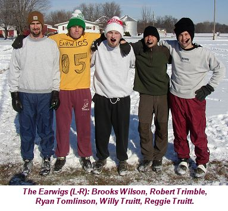 and pull ahead with just minutes to go to
win Cork Bowl 15 over the Mongeese by a score of 105-84. The Earwigs got
some bad news Friday evening when they found out their starting quarterback,
Kirby Newell, was not able to make the trip down to Robinson for the game.
Not only did that leave the Earwigs without their signal caller, but it
left them without a substitute forcing all 5 of their players to play the
entire game. Willy Truitt, Cork Bowl's all-time leading passer, was forced
to take over the reins of the offense. "We were a little concerned
to be honest," said team captain Reggie Truitt. "We had a plan
to use our subs all game long, so we had to completely change our game plan.
It was nice to have the best quarterback in Cork Bowl history there to fill
in."
Ironically, the absence of Newell
may have led to the Earwig win. Their 6th player, Robert Trimble, was supposed
to spend most of the game as a defensive replacement for Newell, but was
forced into full-time duty for the first time in his career and wound up
winning his first MVP award. "We were going to use Trimble on offense
some of the game, but our plan was to have him fresh to play defense on
Patrick," said Willy. "Not only did he do a great job defensively,
he had 10 catches and a pair of touchdowns on offense as well." One
subplot that affected both teams was the weather. Two days prior 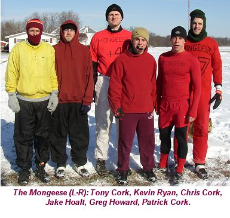 to the
game, a snowstorm buried the Corklestick Park field under 5 inches of snow.
"We figured the snow would play a big factor in the game," added
Patrick Cork. "However, at the end of the day it came down to mistakes
and missed opportunities. The Earwigs made the plays they needed to win
and we failed to take advantage of situations all game long."
6 month old Caleb Cork, son of Patrick,
was the honorary official for the game for the ceremonial coin toss. The
Earwigs won the toss and took the ball to start the game. Willy Truitt,
the most prolific passer in Cork Bowl history, took his first snap from
center since the second quarter of Cork Bowl 13. He showed no signs of rust
as he marched his team down to the one yard line of the Mongeese, but a
pair of incompletions in the endzone killed the drive as the Earwigs were
unable to score and the Mongeese had the first defensive stand in the game.
Tony Cork was sharp on the opening drive completing 4 of 5 passes culminating
in a 10-yard touchdown grab by Greg Howard for the first score of the game. 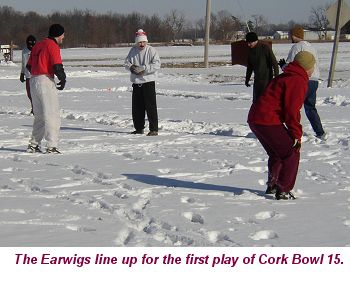
The Earwigs, who were in need of a
touchdown to answer the Mongeese score, went for it all on first down. Truitt
launched a length of the field pass to Brooks Wilson who bobbled the ball
initially, but spun around in time to deflect it to himself in the endzone
for an acrobatic touchdown grab evening the score at 7 apiece. The Mongeese
answered quickly with Tony completing 4 of 5 passes again including another
touchdown to Howard, this time from 6 yards out, for a 14-7 advantage. The
Earwigs responded quickly with a 3-play drive capped off by a 16 yard touchdown
grab by Reggie Truitt to tie the game at 14-14.
In what would eventually become an
all-too familiar sight, the Mongeese dropped a pair of passes on the next
drive, setting up a 4th and 20 scenario from their own 2 yard line. Opting
to go for the 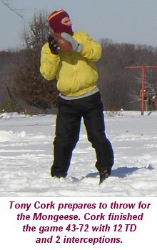 first
down, the gamble nearly paid off as Patrick Cork was wide open down the
sideline, but the pass was underthrown allowing Robert Trimble to knock
it away at the last second giving the ball back to the Earwigs at the goal
line. A Brooks Wilson touchdown on the next play gave the Earwigs their
first lead of the contest at 21-14. The Mongeese followed with a short drive
of their own as Tony Cork found Patrick for 21 yards and then again for
a 17 yard touchdown to tie the game at 21-21 after the first quarter of
play.
The weather didn't seem to bother
either team early as both quarterbacks moved their teams well in the opening
frame with Tony Cork completing 10 of 18 passes for 3 scores and Willy Truitt
connecting on 7 of 13 throws for 3 touchdowns as well.
The Earwigs sputtered out of the gates
to start the second quarter, with 3 consecutive incompletions. Instead of
going for the first down, they chose to play the field position game and
punted the ball into the endzone for a touchback forcing the Mongeese to
drive the length of the field. The Mongeese moved the ball to the 10-yard
line, but on 3rd and goal, Tony Cork forced a pass into the back of the
endzone that was picked off by Reggie Truitt who returned the pick all the
way for a touchdown for a huge momentum swing. The return was the longest
in Cork Bowl history (44 yards) and was the third INT return in Truitt's
career. Trailing 28-21, the Mongeese completed 4 of 5 passes on the next
drive and Chris Cork was able to shake a pair of tackles and rumble into
the 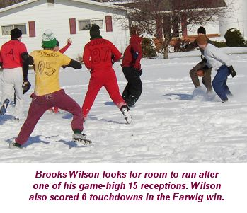 endzone
from 16 yards out to tie the game at 28-28.
Robert Trimble, the eventual MVP,
made his first offensive contribution on the next drive catching a pass
near the sideline and spinning out of the attempted tackle to take it 23
yards for a score giving the Earwigs a 35-28 advantage halfway through the
second quarter. The Mongeese moved the ball near midfield, but on 3rd and
8 Tony Cork turned the ball over for the second time in 3 second quarter
drives as Willy Truitt made a diving interception near midfield. They took
advantage quickly as Willy completed two straight passes to Wilson and with
6 minutes to go in the half the Earwigs had the first two-score lead in
the game at 42-28. Desperate for a touchdown, the Mongeese answered on a
nice catch and run by Kevin Ryan with 3 minutes to go cutting the lead in
half to 42-35. Trimble began the next drive with a 30 yard reception inside
the 10-yard line, but 4 straight incompletions brought the Earwig momentum
to a quick halt as the Mongeese had a chance to tie the game with under
a minute to go in the half.
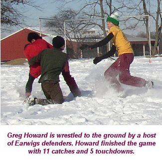 It only took
8 seconds for them to score as Greg Howard turned a short pass into a long
touchdown as he broke free down the sideline for a 38 yard touchdown reception
to tie the score again at 42-42 - beginning a flurry of activity in the
closing seconds of the half. On the first play for the Earwigs, Willy looked
for brother Reggie deep down the field. Howard was able to get a hand on
the ball, however, the ball deflected into the endzone where Reggie made
a diving catch for the touchdown and another acrobatic score for the Earwigs
for a 49-42 lead. Two plays later, Howard broke a long run on a short completion
for another 38-yard touchdown grab to tie the game at 49-49 with 17 seconds
left in the half. After a pair of incomplete passes left them with only
3 seconds and 38 yards to go, the Earwigs decided to use some trickery in
an attempt to score. With the Mongeese in a deep prevent defense, Willy
tossed a short pass to Wilson who immediately pitched the ball back to Truitt.
Truitt moved the ball near midfield before lateraling back to Wilson who
advanced the ball 10 more yards before pitching it to Robert Trimble who
took the ball the final 10 yards into the endzone for a miraculous touchdown
putting the Earwigs up 56-49 at halftime. The Truitt-to Wilson-to Truitt-to
Wilson-to Trimble play capped 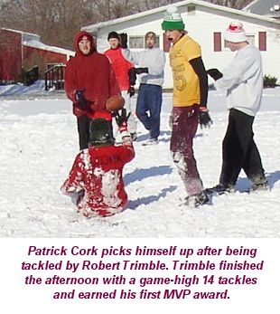 off a scoring frenzy. Over the first 24 minutes in the period
the teams combined to score 5 times. In the final 50 seconds, there were
four touchdowns on a total of 9 plays.
"At the time, I thought that
play would completely change things around for us," remarked Trimble.
"It didn't turn out that way, but it was a huge score for us heading
into the break." "To allow something like that to happen is flat-out
embarrassing for a defense," answered Greg Howard. "There's no
excuse for that to ever happen on the last play of a half. If we stop them,
we get the ball after halftime with a chance to take the lead. That play
could have knocked the wind out of us, but we came out fighting in the second
half."
At the break, Tony Cork appeared to
have better overall numbers completing 22 of 38 passes for 7 touchdowns,
however the 2 interceptions were drive killers. Willy was 14-28 at the break
with 6 TD passes. Patrick Cork led all receivers with 8 catches in the half
and teammate Greg Howard had 7 receptions and 4 scores. Brooks Wilson led
the Earwigs with 7 catches and 3 touchdowns.
The Mongeese took just two plays to
score at the start of the second half as Kevin Ryan scored from 8 yards
out to tie the game at 56-56. A Brooks Wilson touchdown moved the Mongeese
back ahead, but Howard answered with a tip-toe catch in the back of the
endzone to tie the game back at 63-63. Wilson capped off the ensuing 6-play
drive for the Earwigs for a 70-63 lead, but again the Mongeese answered
with another touchdown from 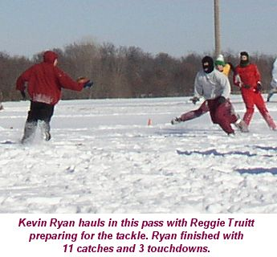 Kevin Ryan knotting the game at 70-70 late in the third quarter.
The Mongeese had a chance to take
the ball back with a shot to regain the lead, but Willy connected with his
favorite target Wilson on 4th and 12 for a gain of 16 yards. Two plays later
Willy found Wilson again near the goal line where he was stood up by Chris
Cork. Wilson tried to stretch the ball into the endzone, but the ball slipped
out of his hand and rolled across the goal line. Wilson was able to corral the loose
ball for a touchdown and a 77-70 Earwigs advantage at the end of the 3rd
quarter. "That drive, more than any other, summed up the game for us,"
remarked a frustrated Patrick Cork. "We had two opportunities to make
a big play on defense and we didn't take advantage of either one of them."
Both teams were effective in the 3rd
quarter as they each scored all 3 times they had the ball. Wilson was huge
in the period with 6 catches and all 3 Earwig touchdowns. Patrick and Kevin
Ryan each had 4 catches as did Robert Trimble. 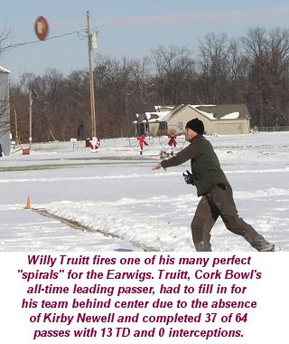
The Mongeese began the final frame
with the ball heading into the wind, which had grown stronger throughout
the game. They moved the ball all the way to the 2 yard line, but on fourth
and goal Robert Trimble batted down the pass intended for Patrick in the
endzone for a huge defensive stop. Reggie Truitt scored on a short pass
to move the lead to 84-70. The Mongeese, in need of a touchdown to keep
pace, were unable to move the ball as a dropped pass and another batted
pass from Trimble resulted in a turnover on downs inside their own 5 yard
line.
With the game seemingly in hand, the
Earwigs made their first and only mistake of the game as Reggie Truitt was
stipped by Greg Howard at the 2 yard line where the fumble was recovered
by Chris Cork and the Mongeese suddenly had life again with 14 minutes remaining.
They eventually scored on a 1 yard pass to Patrick cutting the lead to one
score at 84-77. Once again, the Mongeese had an opportunity to take over
possession with a defensive stop, but Willy Truitt connected on a huge 4th
and 8 play to Trimble for a gain of 14 yards and Reggie capped the drive
off with another touchdown pushing the lead to 91-77. The Mongeese, in hurry-up
mode, completed a short pass to Howard who broke 2 tackles and raced down
the sideline inside the 10 yard line, however as he was fighting for extra
yardage, Reggie Truitt returned the favor by 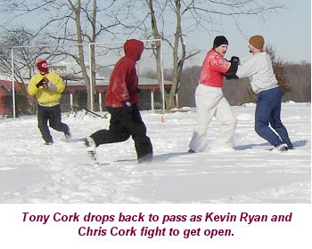 knocking the ball loose and Trimble, as was the case all game,
was in the right place at the right time diving on the fumble with 4 minutes
remaining.
It took just two plays for the Earwigs
to score again as Willy found Reggie for the third time in the period for
a 34 yard touchdown and the score was 98-77 with under 2 minutes to go.
A Ryan Tomlinson touchdown pushed the score to 105-77 briefly before Chris
Cork scored on a 38 yard reception for the final touchdown of the game for
the final score of 105-84.
The Mongeese, who scored on all three
third quarter possessions, failed to score on 4 of their first 5 possessions
in the 4th quarter. The Earwigs, on the other hand, scored on 7 of 8 second
half possesions compared to just 4 of 8 for the Mongeese. The Mongeese turned
the ball over on downs four times and had 3 turnovers in the game. The Earwigs
had just one turnover, one punt and two turnovers on downs - both in the
first half.
"We continued to put ourselves
in difficult situations - 3rd and longs and 4th down plays - and we didn't
make the plays when we needed to," commented Patrick Cork. "It
seemed every time we were open the pass would be 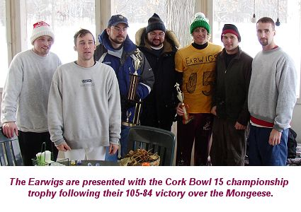 off target or we would drop it. You have to give the Earwigs
credit for playing good defense, but I think all of my teammates would agree
that our biggest enemy today was ourselves." For the game, the Mongeese
dropped 12 passes and turned the ball over 3 times compared to just one
turnover for the Earwigs. "It was almost a mirror image of last year's
game," added Tony Cork. In Cork Bowl 14, with virtually the same teams,
the Truitts' Paramecium team dropped 13 passes and turned the ball over
3 times. This year, however, they controlled the ball and had only a handful
of dropped passes in the game. The Earwigs converted on 2 of 4 fourth down
plays, with both non-conversions coming in the first half. The Mongeese
converted just 1 of 5 fourth down plays compared to their 4-for-4 success
rate last year. The Earwigs were 6-for-11 on third down compared to just
6-for-14 for the Mongeese.
Tony Cork had another solid stat line
with a 43-72 (60%) effort with 13 touchdowns and 2 interceptions. Willy
Truitt, happy to be back under center, finished 37-for-64 (58%) with 13
touchdowns and the all-important zero interceptions. It was the second time
in Truitt's illustrious career that he went an entire game without turning
the ball over. "The guys were complaining a 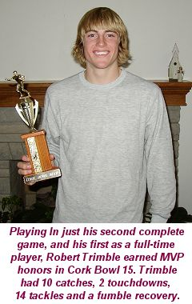 little about my play-calling in the first half," remarked
Truitt. "I told them I didn't get the call that I was quarterbacking
until 8:00 Friday night so I literally only had a few hours to go over the
playbook. Once we got the rust off in the first half we rolled down the
stretch."
Brooks Wilson led all receivers in
the game with 15 receptions and 6 touchdowns. Robert Trimble had 10 catches
and one touchdown and added another score on the lateral at the end of the
half. Reggie Truitt finished with 9 catches and tied a career-high with
5 touchdowns. He also had the interception return for a touchdown and forced
a fumble in the 4th quarter. Ryan Tomlinson rounded out the offense with
3 catches and 1 touchdown.
As mentioned earlier, Robert Trimble
played an outstanding all-around game earning MVP honors in just his second
full game. "We were upset to hear that Kirby couldn't make it,"
said Trimble. 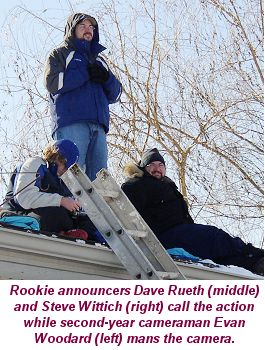 "But I think that made us all focus a little more knowing
that there could be no letdowns. I wasn't expecting to play that much offense,
so I had to make the most of the opportunity." Trimble finished the
game with 10 catches and 2 offensive scores, but his biggest contribution
came on the defensive side of the ball where he finished with 14 tackles
and a fumble recovery. Not apparent in the statistics is the defense he
played on Patrick Cork. The all-time leading receiver finished with a team-high
14 catches, but had just 2 in the fourth quarter when the Mongeese offense
struggled. Trimble was credited with 5 passes defensed in the game.
Patrick led the Mongeese with 14 catches
and 2 touchdowns. Greg Howard and Kevin Ryan each had 11 receptions with
Howard scoring 5 times and Ryan 3 times. Chris Cork finished with 6 catches
and 2 touchdowns and Jake Hoalt had one reception.
The statistics were rather deceiving
as the Mongeese had more completions and more total yardage (585 to 535)
than the Earwigs, but the dropped passes and 3 turnovers washed out a lot
of the big gains they had on offense. "Our defense gave us a short
field a number of times in the game and we had the big interception return
for a score as well," added Willy. "That hidden yardage doesn't
show up in the stats, but it's just as important as everything else."
A handful of players have hinted at
retirement following the milestone 15th anniversary game. Willy Truitt,
Reggie Truitt, Chris Cork and Kirby Newell have all made it public that
they might not be back for another Cork Bowl. Needless to say, the upcoming
offseason will be one of the most interesting and important in history.
Cork Bowl 15 Game Notes:
Reggie Truitt's 5 tackles make
him the first player in Cork Bowl history to total 100+ tackles in a career...Tony
Cork joined Willy Truitt as the only quarterbacks to have 200 career completions...Willy
Truitt passed the 300 completion and 500 attempt marks in the game...Greg
Howard passed Kirby Newell to move into 3rd place in career receptions with
90...Willy Truitt is now tied for 3rd in career interceptions with 8...Jake
Hoalt and Robert Trimble vaulted into a tie for 9th in career tackles with
25
(Click Here for
More Pictures!)
Back to top
Cork
Bowl 15 Stats
Back to Cork
Bowl |